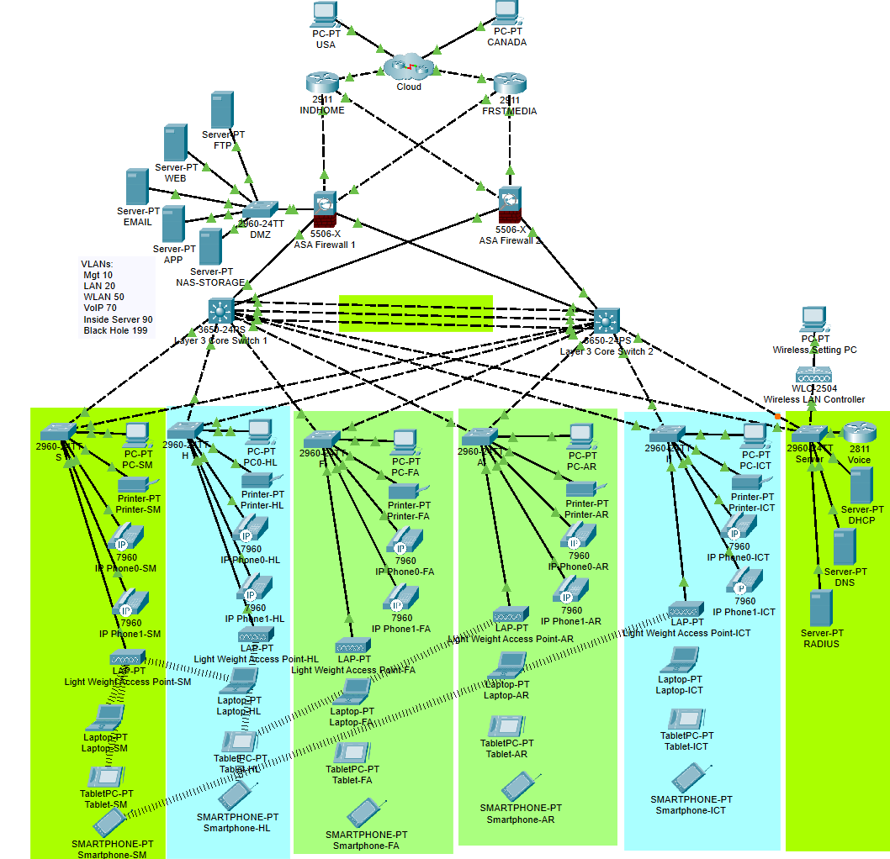

Cytonn Ltd, with 600 devices, is preparing to move to a new building consisting of three floors. The building will house five departments and is equipped with:
Lightweight Access Points (LAPs) deployed in each department
2. Network Topology

Figure 1: Network Topology Diagram Description: The diagram illustrates the physical and logical layout of the network, including firewalls, switches, routers, WLC, LAPs, VLANs, and dual ISP connections. Key components are labeled for clarity.
a. Core Infrastructure
Layer 3 switching with OSPF routing
High availability through HSRP configuration
EtherChannel load balancing setup
Dual ISP connectivity with failover
b. Security Architecture
VLAN segmentation (MGT, LAN, WLAN, DMZ)
Cisco ASA firewall configuration
ACL implementation and security zones
RADIUS authentication integration
c. Advanced Features
Subnetting design
DMZ services configuration
Enterprise wireless deployment
Network monitoring and management
3. Switch Configuration
diagram or screenshot of switch configurations, such as VLAN assignments, trunk ports, and EtherChannel setup.
a. Basic Setting, SSH, and Standard ACL for SSH to All Switches
All Switches
enable
config t
no ip domain-lookup
line console 0
password cisco
login
logging synchronous
exec-timeout 3 0
exit
enable password cisco
banner motd #NO UNAUTHORIZED ACCESS!!#
service password-encryption
username cisco password cisco
ip domain-name cisco.com
crypto key generate rsa modulus 2048
ip ssh version 2
line vty 0 15
login local
transport input ssh
exit
access-list 1 permit 192.168.10.0 0.0.0.255
line vty 0 15
access-class 1 in
exit
do wr
b. VLAN assignment, access and trunk setting to All Switches
Inter-Department Switches
vlan 10
name MGT
vlan 20
name LAN
vlan 50
name WLAN
vlan 70
name VOIP
vlan 199
name BLACKHOLE
exit
interface range fa0/1-2
switchport mode trunk
exit
interface range fa0/3-4
switchport mode access
switchport access vlan 20
exit
interface range fa0/5-6
switchport mode access
switchport access vlan 70
exit
interface range fa0/7
switchport mode access
switchport access vlan 50
exit
interface range fa0/8-24, gig0/1-2
switchport mode access
switchport access vlan 199
exit
do wr
! Check VLAN Configuration
do sh vlan
Data Center Switch
vlan 10
name MGT
vlan 20
name LAN
vlan 50
name WLAN
vlan 70
name VOIP
vlan 90
name INSIDE-SERVERS
exit
interface range fa0/1-2, fa0/7
switchport mode trunk
exit
interface range fa0/3-5
switchport mode access
switchport access vlan 90
exit
interface fa0/6
switchport mode access
switchport access vlan 50
exit
do wr
! Check VLAN Configuration
do sh vlan
Layer 3 Core Switches
vlan 10
name MGT
vlan 20
name LAN
vlan 50
name WLAN
vlan 70
name VOIP
vlan 90
name INSIDE-SERVER
exit
interface range gig1/0/3-8
switchport mode trunk
exit
do wr
! Check VLAN Configuration
do sh vlan
Figure 2: VLAN Display on one of Cisco Switches Description: Screenshot showing the output of the do show vlan command from a Cisco 2960 switch, displaying the configured VLANs (VLANs 10, 20, and 30) and their corresponding names and statuses.
c. STP Portfast and BPDU guard configuration on all access ports
Inter-Department Switches
interface range fa0/3-24
spanning-tree portfast
spanning-tree bpduguard enable
exit
do wr
Data Center Switch
interface range fa0/3-6, fa0/8-24
spanning-tree portfast
spanning-tree bpduguard enable
exit
do wr
Demilitarized Zone (DMZ) Switch
interface range fa0/1-24
spanning-tree portfast
spanning-tree bpduguard enable
exit
do wr
Figure 3: Spanning Tree Configuration on Access Ports Description: Screenshot showing the output of the show spanning-tree command. All access ports are configured with PortFast and BPDU Guard, ensuring faster convergence and protection against BPDU-related loops.
d. EtherChannel (Load Balancer)
Layer 3 Core Switch 1
interface range gig1/0/9-11
channel-group 1 mode active
exit
interface port-channel 1
switchport mode trunk
exit
do wr
Layer 3 Core Switch 2
interface range gig1/0/9-11
channel-group 1 mode passive
exit
interface port-channel 1
switchport mode trunk
exit
do wr
Figure 4: EtherChannel (Load Balancer) Configuration on Layer 3 Core Switch 1 Description: Screenshot showing the output of the show etherchannel summary command. Ports gig1/0/9-11 are bundled into Port-Channel 1 in trunk mode using LACP (mode active), providing link aggregation and load balancing.
4. Subnetting and IP Addressing
Category
VLAN
Network & Subnet Mask
Default Gateway
Management (MGT)
10
192.168.10.0/24
192.168.0.1
LAN
20
172.16.0.0/16
172.16.0.1
WLAN
50
10.20.0.0/16
10.20.0.1
Voice IP (VoIP)
70
172.30.0.0/16
172.30.0.1
DMZ
-
10.11.11.0/27
10.11.11.1
Inside Servers
90
10.11.11.32/27
10.11.11.33
Layer 3 Core Switch 1
ip routing
interface gig1/0/1
no switchport
no shutdown
ip address 10.2.2.1 255.255.255.252
exit
interface gig1/0/2
no switchport
no shutdown
ip address 10.2.2.5 255.255.255.252
exit
do wr
Layer 3 Core Switch 2
ip routing
interface gig1/0/1
no switchport
no shutdown
ip address 10.2.2.9 255.255.255.252
exit
interface gig1/0/2
no switchport
no shutdown
ip address 10.2.2.13 255.255.255.252
exit
do wr
ISP 1 (Indhome)
interface gig0/0
ip address 105.100.50.1 255.255.255.252
no shutdown
exit
interface gig0/1
ip address 105.100.50.5 255.255.255.252
no shutdown
exit
interface gig0/2
ip address 20.20.20.1 255.255.255.252
no shutdown
exit
do wr
ISP 2 (Frstmedia)
interface gig0/0
ip address 197.200.100.1 255.255.255.252
no shutdown
exit
interface gig0/1
ip address 197.200.100.5 255.255.255.252
no shutdown
exit
interface gig0/2
ip address 30.30.30.1 255.255.255.252
no shutdown
exit
do wr
Cloud
interface gig0/0
ip address 20.20.20.2 255.255.255.252
no shutdown
exit
interface gig0/1
ip address 30.30.30.2 255.255.255.252
no shutdown
exit
interface gig0/2
ip address 8.0.0.1 255.0.0.0
no shutdown
exit
do wr
5. HSRP, Inter-VLAN Routing, and IP DHCP Helper Address
diagram or screenshot showing HSRP configuration and inter-VLAN routing setup.
Layer 3 Core Switch 1
interface Vlan10
ip address 192.168.10.3 255.255.255.0
ip helper-address 10.11.11.38
standby 10 ip 192.168.10.1
standby 10 preempt
interface Vlan20
ip address 172.16.0.3 255.255.0.0
ip helper-address 10.11.11.38
standby 20 ip 172.16.0.1
standby 20 preempt
interface Vlan50
ip address 10.20.0.2 255.255.0.0
ip helper-address 10.11.11.38
standby 50 ip 10.20.0.1
standby 50 preempt
interface Vlan90
ip address 10.11.11.34 255.255.255.224
standby 90 ip 10.11.11.33
standby 90 preempt
Layer 3 Core Switch 2
interface Vlan10
ip address 192.168.10.2 255.255.255.0
ip helper-address 10.11.11.38
standby 10 ip 192.168.10.1
standby 10 preempt
interface Vlan20
ip address 172.16.0.2 255.255.0.0
ip helper-address 10.11.11.38
standby 20 ip 172.16.0.1
standby 20 preempt
interface Vlan50
ip address 10.20.0.3 255.255.0.0
ip helper-address 10.11.11.38
standby 50 ip 10.20.0.1
standby 50 preempt
interface Vlan90
ip address 10.11.11.35 255.255.255.224
standby 90 ip 10.11.11.33
standby 90 preempt
6. Static IP Address to DMZ and Server Group
table or diagram showing static IP assignments for DMZ and server groups.
Devices/Services
IPv4 Address
Subnet Mask
Default Gateway
DNS Server
DHCP
10.11.38
255.255.255.224
10.11.11.33
10.11.11.37
DNS
10.11.11.37
255.255.255.224
10.11.11.33
10.11.11.37
RADIUS
10.11.11.36
255.255.255.224
10.11.11.33
10.11.11.37
FTP
10.11.11.10
255.255.255.224
10.11.11.1
10.11.11.37
WEB
10.11.11.11
255.255.255.224
10.11.11.1
10.11.11.37
EMAIL
10.11.11.12
255.255.255.224
10.11.11.1
10.11.11.37
APP
10.11.11.13
255.255.255.224
10.11.11.1
10.11.11.37
NAS-STORAGE
10.11.11.14
255.255.255.224
10.11.11.1
10.11.11.37
USA PC
8.0.0.10
255.0.0.0
8.0.0.1
8.0.0.1
Canada PC
8.0.0.20
255.0.0.0
8.0.0.1
8.0.0.1
7. DHCP Server Device Configuration
screenshot or configuration snippet of the DHCP server setup
Pool Name
Start IPv4 Address
Subnet Mask
Default Gateway
DNS Server
Max Number of Users
WLC Address
serverPool
0.0.0.0
0.0.0.0
0.0.0.0
0.0.0.0
0
N/A
MGT-Pool
192.168.10.11
255.255.255.0
192.168.10.1
10.11.11.37
200
N/A
LAN-Pool
172.16.0.11
255.255.0.0
172.16.0.1
10.11.11.37
1000
N/A
WLAN-Pool
10.20.0.11
255.255.0.0
10.20.0.1
10.11.11.37
1000
10.20.0.10
8. OSPF on Routers and Core Switches
diagram or screenshot showing OSPF configuration on routers and core switches.
Layer 3 Core Switch 1
router ospf 35
router-id 1.1.1.1
network 10.2.2.0 0.0.0.3 area 0
network 10.2.2.4 0.0.0.3 area 0
network 192.168.10.0 0.0.0.255 area 0
network 172.16.0.0 0.0.255.255 area 0
network 10.20.0.0 0.0.255.255 area 0
network 10.11.11.32 0.0.0.31 area 0
exit
do write
show ip ospf neighbor
show ip route ospf
Layer 3 Core Switch 2
router ospf 35
router-id 1.1.2.2
network 10.2.2.8 0.0.0.3 area 0
network 10.2.2.12 0.0.0.3 area 0
network 192.168.10.0 0.0.0.255 area 0
network 172.16.0.0 0.0.255.255 area 0
network 10.20.0.0 0.0.255.255 area 0
network 10.11.11.32 0.0.0.31 area 0
exit
do write
show ip ospf neighbor
show ip route ospf
ISP 1 (Indhome)
router ospf 35
router-id 1.1.3.3
network 105.100.50.0 0.0.0.3 area 0
network 105.100.50.4 0.0.0.3 area 0
network 20.20.20.0 0.0.0.3 area 0
exit
do write
show ip ospf neighbor
show ip route ospf
ISP 2 (Frstmedia)
router ospf 35
router-id 1.1.4.4
network 30.30.30.0 0.0.0.3 area 0
network 197.200.100.0 0.0.0.3 area 0
network 192.200.100.4 0.0.0.3 area 0
exit
do write
show ip ospf neighbor
show ip route ospf
Cloud
router ospf 35
router-id 1.1.5.5
network 8.0.0.0 0.255.255.255 area 0
network 20.20.20.0 0.0.0.3 area 0
network 30.30.30.0 0.0.0.3 area 0
exit
do write
show ip ospf neighbor
show ip route ospf
9. Firewalls Setting
screenshots or diagrams of firewall configurations, such as security zones, OSPF routes, and inspection policies.
a. Interface Security Zones and Levels
ASA Firewall 1
interface gig1/3
no shutdown
ip address 10.2.2.2 255.255.255.252
nameif INSIDE1
security-level 100
exit
interface gig1/4
no shutdown
ip address 10.2.2.10 255.255.255.252
nameif INSIDE2
security-level 100
exit
interface gig1/5
no shutdown
ip address 10.11.11.1 255.255.255.224
nameif DMZ
security-level 70
exit
interface gig1/1
no shutdown
ip address 105.100.50.2 255.255.255.252
nameif OUTSIDE1
security-level 0
exit
interface gig1/2
no shutdown
ip address 197.200.100.2 255.255.255.252
nameif OUTSIDE2
security-level 0
exit
do wr
wr mem
ASA Firewall 2
interface gig1/3
no shutdown
ip address 10.2.2.6 255.255.255.252
nameif INSIDE1
security-level 100
exit
interface gig1/4
no shutdown
ip address 10.2.2.14 255.255.255.252
nameif INSIDE2
security-level 100
exit
interface gig1/1
no shutdown
ip address 105.100.50.6 255.255.255.252
nameif OUTSIDE1
security-level 0
exit
interface gig1/2
no shutdown
ip address 197.200.100.6 255.255.255.252
nameif OUTSIDE2
security-level 0
exit
do wr
wr mem
b. OSPF and Static Routes
ASA Firewall 1
route OUTSIDE1 0.0.0.0 0.0.0.0 105.100.50.1
route OUTSIDE2 0.0.0.0 0.0.0.0 197.200.100.1 70
router ospf 35
router-id 1.1.8.8
network 105.100.50.0 255.255.255.252 area 0
network 197.200.100.0 255.255.255.252 area 0
network 10.11.11.0 255.255.255.224 area 0
network 10.2.2.0 255.255.255.252 area 0
network 10.2.2.8 255.255.255.252 area 0
exit
wr mem
ASA Firewall 2
route OUTSIDE2 0.0.0.0 0.0.0.0 197.200.100.5
route OUTSIDE1 0.0.0.0 0.0.0.0 105.100.50.5
router ospf 35
router-id 1.1.9.9
network 197.200.100.4 255.255.255.252 area 0
network 105.100.50.4 255.255.255.252 area 0
network 10.2.2.4 255.255.255.252 area 0
network 10.2.2.12 255.255.255.252 area 0
exit
wr mem
access-list RES extended permit icmp any any
access-list RES extended permit tcp any any eq 80
access-list RES extended permit tcp any any eq 53
access-list RES extended permit udp any any eq 53
access-group RES in interface DMZ
access-group RES in interface OUTSIDE1
access-group RES in interface OUTSIDE2
wr mem
ASA Firewall 2
access-list RES extended permit icmp any any
access-list RES extended permit tcp any any eq 80
access-list RES extended permit tcp any any eq 53
access-list RES extended permit udp any any eq 53
access-group RES in interface OUTSIDE1
access-group RES in interface OUTSIDE2
wr mem
10. Port Security Configuration
For enhanced network security, port security has been implemented on all access switches.
Access Layer Switches Configuration
interface range fa0/3-24
switchport port-security
switchport port-security maximum 2
switchport port-security mac-address sticky
switchport port-security violation restrict
switchport port-security aging time 60
exit
do wr
11. AAA and RADIUS Configuration
Authentication, Authorization, and Accounting (AAA) with RADIUS server integration for centralized access control.
Layer 3 Core Switches
aaa new-model
aaa authentication login default group radius local
aaa authorization exec default group radius local
aaa accounting exec default start-stop group radius
radius server RAD-SRV
address ipv4 10.11.11.36 auth-port 1812 acct-port 1813
key Str0ngR@diusK3y
exit
do wr
ASA Firewalls
aaa-server RADIUS protocol radius
aaa-server RADIUS (INSIDE) host 10.11.11.36
key Str0ngR@diusK3y
exit
aaa authentication http console RADIUS LOCAL
aaa authentication ssh console RADIUS LOCAL
aaa authentication enable console RADIUS LOCAL
do wr
12. Network Monitoring and Management
Centralized monitoring setup using SNMP for network visibility and proactive management.
Layer 3 Core Switches
snmp-server community C1sc0C1sc0 RO
snmp-server location Building-A-Floor-1
snmp-server contact admin@cytonn.com
snmp-server enable traps
snmp-server host 10.11.11.38 version 2c C1sc0C1sc0
logging host 10.11.11.38
logging trap notifications
logging source-interface Vlan10
do wr
13. WLAN Configuration
diagram or screenshot of the WLAN configuration, including SSIDs, VLANs, and access point placements.